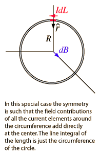
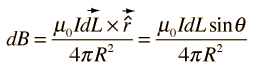
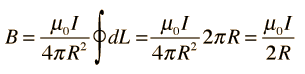
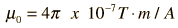

Field at Center of Current Loop
|

|
The form of the magnetic field from a current element in the Biot-Savart law becomes

which in this case simplifies greatly because the angle =90 ° for all points along the path and the distance to the field point is constant. The integral becomes


|
The current used in the calculation above is the total current, so for a coil of N turns, the current used is Ni where i is the current supplied to the coil.
The Earth's magnetic field at the surface is about 0.5 Gauss.
Discussion of current loop
|
Index
Magnetic field concepts
Currents as magnetic sources |